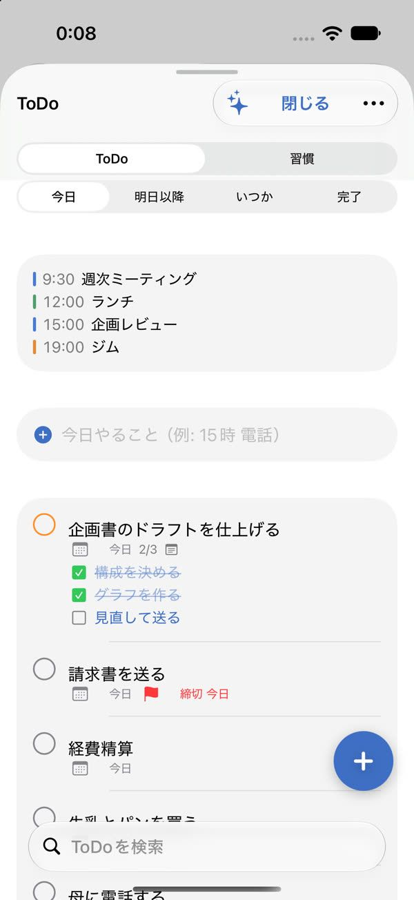
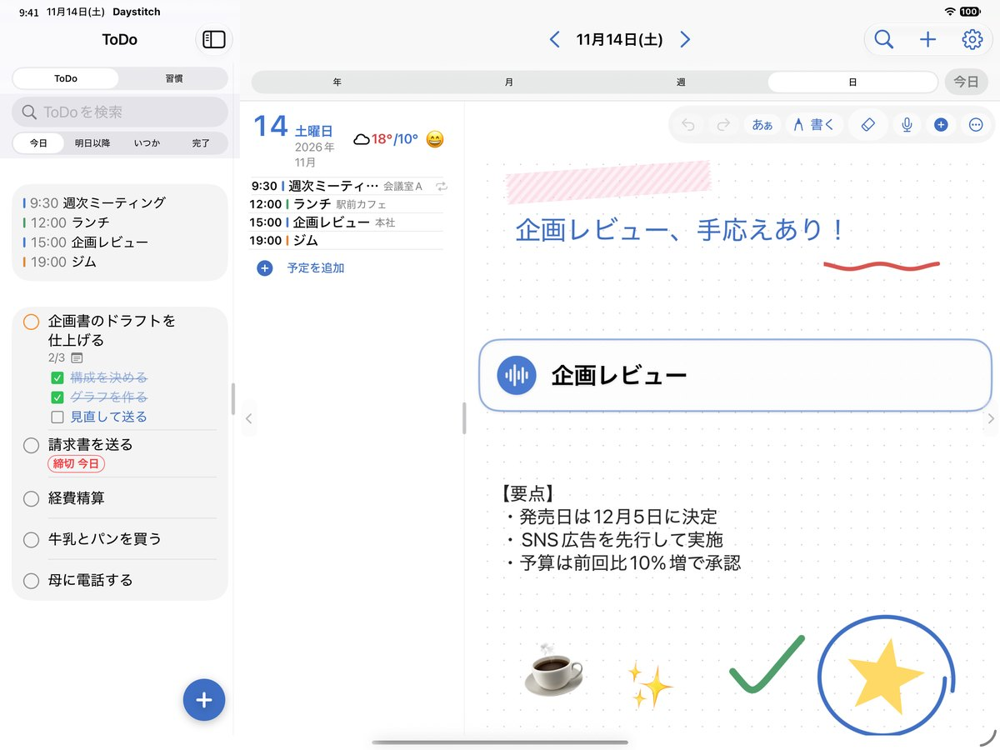
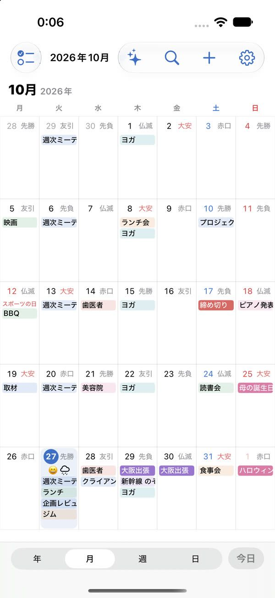
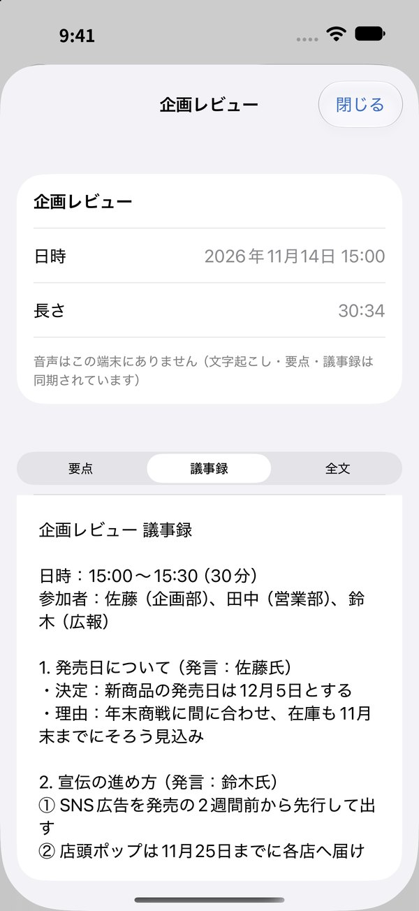
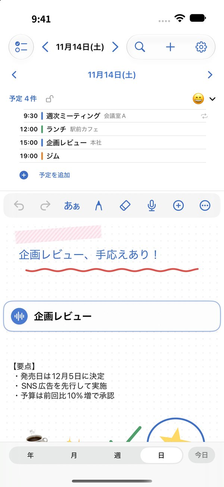
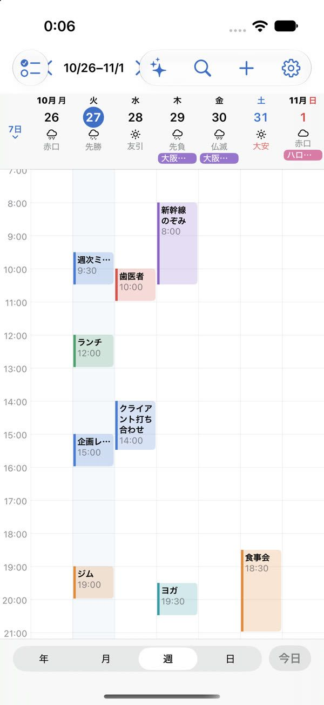
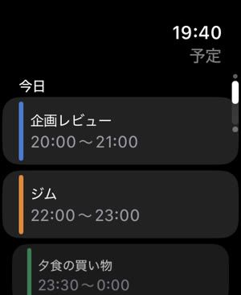
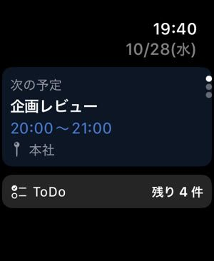

07:30 · Morning
今日の予定と ToDo をひと目で
ウィジェットの 2 週間カレンダーと、Siri の「今日をまとめて」。家を出る前に 1 日の流れがわかります。
Daystitch: Planner & To-Do （デイステッチ）
iPhone · iPad · Apple Watch
予定、ToDo、手書きメモ、日記、会議の文字起こし、天気まで。これ 1 つで全部そろう、オールインワンの手帳アプリです。いくつものアプリを行き来しなくていい、かゆいところに手が届く 1 冊を。


Try it
Daystitch の ToDo を、ブラウザでそのまま試せます。丸をタップして完了、終わったものは「完了」タブにまとまります。ToDo の中のチェックリストや、毎週の繰り返しも。下の丸で着せ替えも変えてみてください。
※ アプリの ToDo 画面をもとにした体験用の見本です。実際の画面とは細部が異なります。入力した内容は保存されません。
All in one
カレンダー、ToDo、メモ、録音、天気。ふだん別々のアプリでやっていたことが、Daystitch（デイステッチ）1 つで片づきます。
A day with Daystitch
予定を確かめる朝、会議の多い昼、ふり返る夜。どの時間も、同じ手帳の中で続いていきます。

07:30 · Morning
ウィジェットの 2 週間カレンダーと、Siri の「今日をまとめて」。家を出る前に 1 日の流れがわかります。

14:00 · Meeting
会議が終わるころには、要点と「やること」がまとまって手帳に。やることは ToDo へ送れます。

21:00 · Evening
写真やスタンプを貼って、自分だけのページに。AI が書き出しのヒントもくれます。
Features
画像はすべて開発中のアプリの実際の画面です。表示は端末・設定・OS のバージョンによって変わることがあります。
01 · Meeting notes
日のページで録音ボタンを押すだけ。止めると自動で文字に起こし、AI が「要点・決まったこと・やること」にまとめます。長い会議も区切って読み取ります。
02 · To-Do
「今日・明日以降・いつか」の 3 つに分けるだけ。行をタップすればその場でメモやチェックリストを書けて、終わったものは「完了」に日付ごとにたまっていきます。締め切りが来たものは、赤い旗で自動的に「今日」へ。
03 · Calendar
年・月・週・日の 4 つの表示。日本の祝日と六曜（大安・仏滅など）、天気もいっしょに。iPhone のカレンダー（Google・Outlook の予定も）を重ねて見られます。

04 · Handwriting
Apple Pencil や指で自由に。下まで書き進めるとページが広がり、消しゴムは「なぞった所だけ」と「線ごと」を切り替え。写真・スタンプ・マスキングテープも貼れて、手書きの文字はあとから検索できます。
05 · Apple Intelligence & Siri
Apple Intelligence で、話し言葉から予定や ToDo を作成。今日のブリーフィング、週のふり返り、大きな ToDo の分解、空き時間への割り当て、AI で描いた絵を日記に。Apple Intelligence なら追加料金なし、端末の中で処理されます。ChatGPT や Gemini に切り替えることもできます。
※ Apple Intelligence の機能は対応端末（iPhone 15 Pro 以降、M1 以降の iPad、iPad mini（A17 Pro））と iOS 26 以降が必要です。Siri への話しかけは会話の例です。
06 · Apple Watch
Apple Watch で予定を確認して、ToDo をタップで完了。音声で ToDo を追加すれば、iPhone の手帳にもすぐ反映されます。文字盤には次の予定と残りの件数を。


And more
Price
すべての機能を 1 週間お試しいただけます。期間内に解約すれば料金はかかりません。
発売記念価格 · 2027年2月28日までのご登録
¥1,500 / 年
または ¥200 / 月